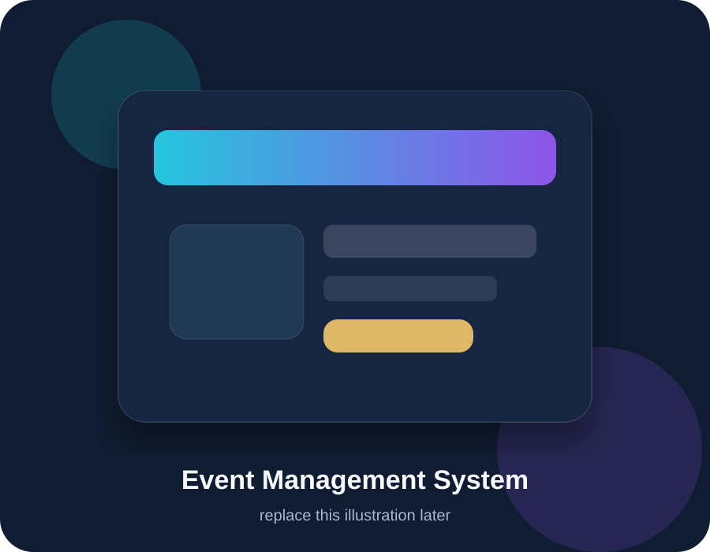
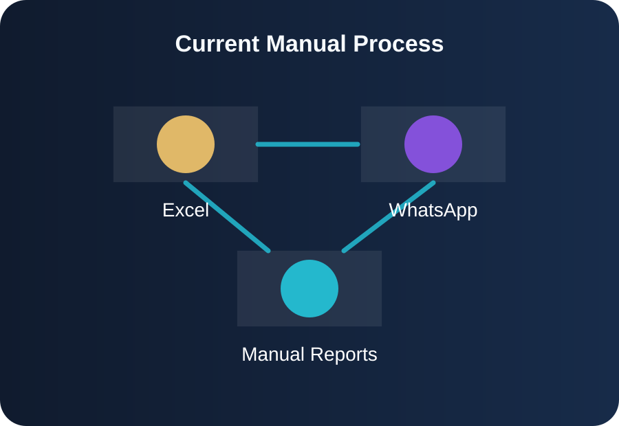
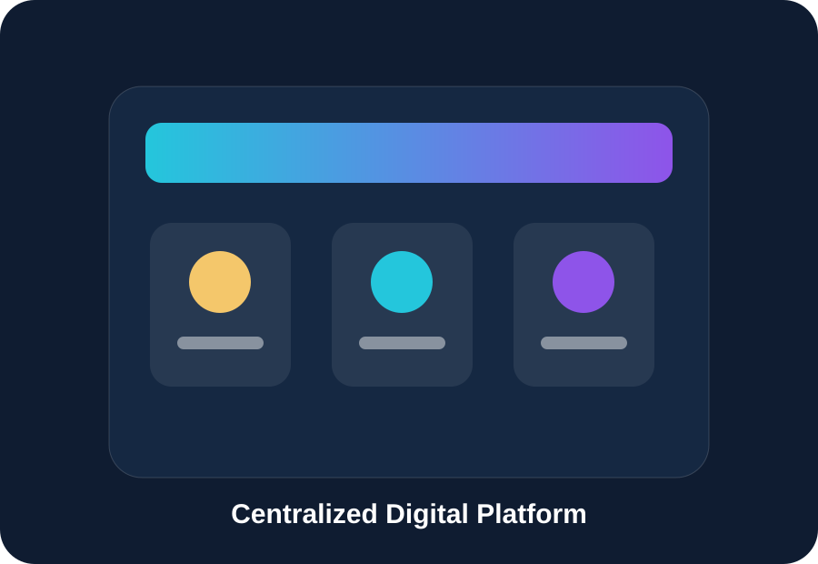
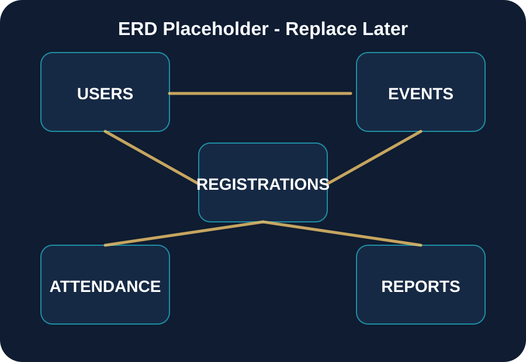
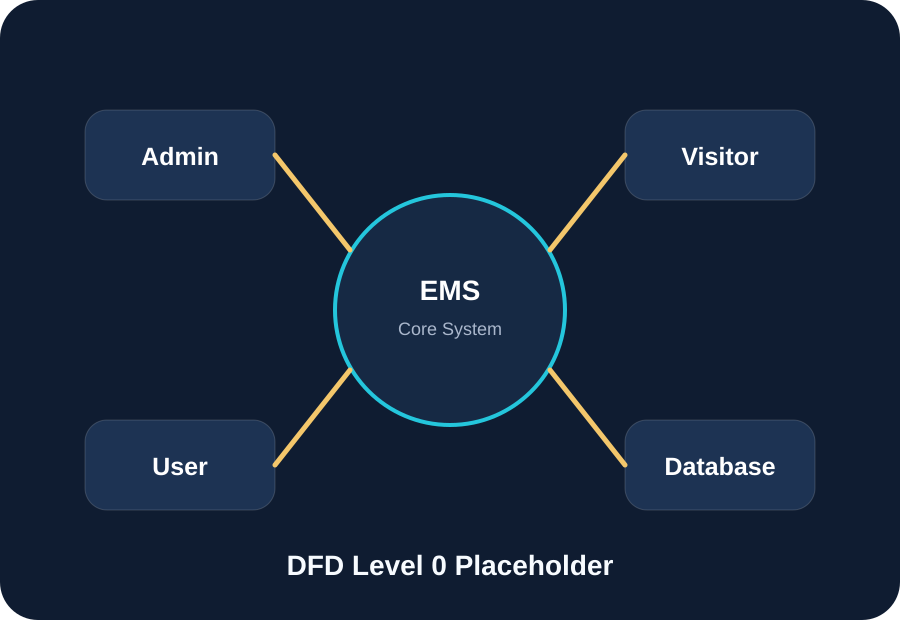
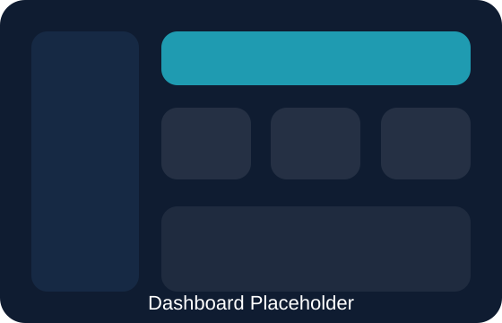
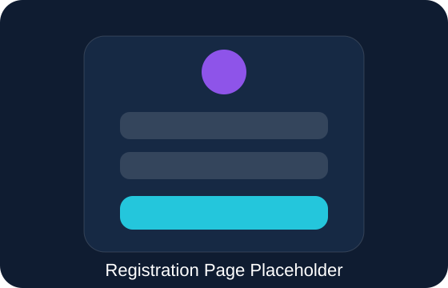
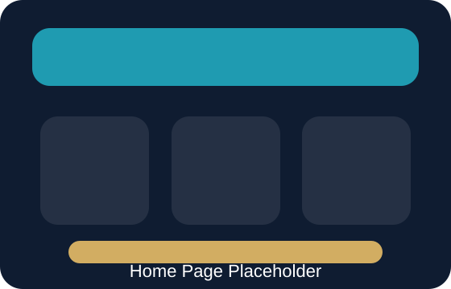

نظام إدارة الفعاليات
منصة ويب احترافية لتنظيم الدورات، الورش، المسابقات، وإدارة التسجيل والحضور والتقارير.

لماذا نحتاج النظام؟
إدارة الفعاليات يدويًا عبر Excel وWhatsApp تؤدي إلى ضياع البيانات، تكرار التسجيل، صعوبة متابعة الحضور، وتأخر التقارير.

منصة مركزية لإدارة كل دورة حياة الحدث
يوفر النظام واجهة واحدة لإنشاء الفعاليات، نشرها، استقبال التسجيلات، إدارة المشاركين، تسجيل الحضور، وإظهار تقارير إدارية واضحة.
- تسجيل إلكتروني منظم للمستخدمين.
- لوحة تحكم للإدارة والمنظمين.
- إحصاءات مباشرة عن التسجيل والحضور.

أهداف واضحة وقابلة للقياس
تحليل وتصميم
بناء نموذج متكامل للنظام قبل التنفيذ.
سهولة الاستخدام
تجربة بسيطة للمستخدم والإدارة.
تقليل الأخطاء
استبدال الإجراءات اليدوية بنظام منظم.
إدارة المشاركين
تتبع التسجيلات والحضور بوضوح.
تقارير لحظية
إحصاءات تساعد الإدارة على القرار.
قابلية التوسع
إضافة أنواع فعاليات ووظائف مستقبلًا.
المستخدمون الرئيسيون في النظام
ماذا يجب أن يفعل النظام؟
تم تقسيم الوظائف حسب نوع المستخدم لضمان وضوح الصلاحيات وسهولة الاختبار.
Admin
تسجيل الدخول، إدارة الفعاليات، إدارة المستخدمين، قبول/رفض التسجيلات، متابعة الحضور، عرض التقارير.
User
إنشاء حساب، تسجيل الدخول، تصفح الفعاليات، التسجيل، إلغاء التسجيل، تحديث الملف الشخصي.
Visitor
تصفح الفعاليات العامة، البحث، عرض التفاصيل، إنشاء حساب، التواصل مع الإدارة.
أهم حالات الاستخدام
معمارية النظام بثلاث طبقات
يعتمد المشروع على فصل واضح بين واجهة المستخدم، منطق التنفيذ، وطبقة البيانات والمصادقة.
تصميم قاعدة البيانات
قاعدة البيانات تربط المستخدمين بالفعاليات عبر جدول التسجيلات، ويتم بناء الحضور والتقارير فوق هذه العلاقات.

تدفق البيانات داخل النظام
الزائر يتصفح، المستخدم يسجل، والمدير يدير الفعاليات ويستعرض الإحصاءات. كل العمليات تمر عبر نظام مركزي متصل بقاعدة البيانات.

واجهات مقترحة للنظام

لوحة التحكم

صفحة التسجيل

الصفحة الرئيسية
متطلبات الجودة والأداء
تشفير كلمات المرور وحماية بيانات المستخدمين من الوصول غير المصرح.
تحميل الصفحات خلال وقت قصير مع تجربة استخدام سلسة وواضحة.
عمل النظام على المتصفحات الحديثة وشاشات الكمبيوتر والجوال.
قابلية إضافة فعاليات وتقارير وصلاحيات جديدة مستقبلًا.
من التحليل إلى التنفيذ بمساعدة الذكاء الاصطناعي
تم تحويل المتطلبات إلى أوامر واضحة، ثم بناء النظام تدريجيًا مع اختبار كل جزء وتحسينه.
القيمة النهائية للمشروع
النظام يحول إدارة الفعاليات من عملية يدوية مشتتة إلى منصة رقمية منظمة، قابلة للتوسع، وتدعم اتخاذ القرار من خلال البيانات.
Event Management System
Professional, scalable, and user-friendly.
أسماء الطلاب
تم إعداد هذا العرض التقديمي لمشروع نظام إدارة الفعاليات.
شكرًا لحسن الاستماع
جاهز للأسئلة والمناقشة